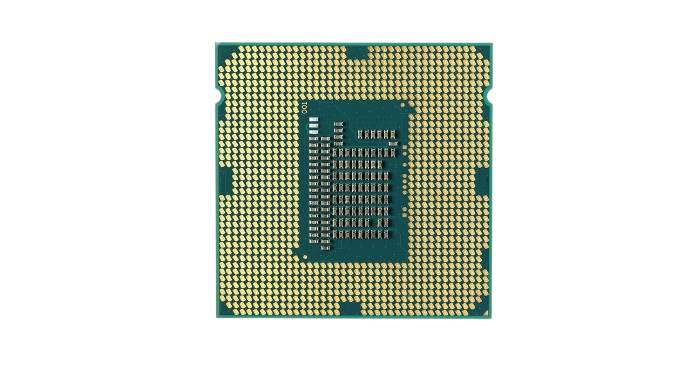

Das Gehirn des Computers
Die CPU, also die Central Processing Unit, ist die zentrale Recheneinheit eines Computers. Sie führt Befehle aus, verarbeitet Daten und steuert alle anderen Komponenten. Ohne CPU kann kein Computer funktionieren, da sie alle Anweisungen interpretiert und ausführt, die Programme und das Betriebssystem vorgeben. Man bezeichnet die CPU deshalb oft als das Gehirn des Computers. Sie entscheidet, welche Aufgaben wann ausgeführt werden, und sorgt dafür, dass Programme flüssig laufen und Daten schnell verarbeitet werden können.

Die CPU arbeitet nach einem festen Ablauf, dem sogenannten Fetch-Decode-Execute-Zyklus.
Die Geschwindigkeit, mit der eine CPU arbeitet, wird in Hertz (Hz) gemessen. Je höher der Hertz-Wert des Prozessors ist, desto schneller kann er Anweisungen verarbeiten. Das bedeutet, dass Sie mit einem Prozessor mit einer höheren Taktfrequenz Aufgaben schneller erledigen können als mit einem Prozessor mit einer niedrigeren Taktfrequenz. Bei modernen Prozessoren kann die Taktfrequenz zwischen 1 GHz und 5 GHz liegen.
Neben der Taktfrequenz haben CPUs auch Kerne, die mit mehreren Verarbeitungseinheiten in einem Chip vergleichbar sind. Jeder Kern kann mehrere Befehle gleichzeitig ausführen, was zu einer effizienteren Verarbeitung von Aufgaben und damit zu einer besseren Leistung im Vergleich zu CPUs mit nur einem Kern führt. Moderne Prozessoren verfügen in der Regel über zwei bis acht Kerne, je nach Verwendungszweck wie Spiele oder produktivitätsbezogene Aufgaben wie Videobearbeitung oder 3D-Rendering.
Die CPU-Leistung bezieht sich darauf, wie schnell eine CPU die Anweisungen ihrer Programme verarbeiten kann. Diese Leistung wird in der Anzahl der Anweisungen pro Sekunde (IPS) gemessen. Je höher die IPS, desto schneller können die Aufgaben erledigt werden. Die Anzahl der Anweisungen, die eine CPU verarbeiten kann, hängt von ihrer Taktfrequenz und anderen Faktoren wie Architektur und Cache-Größe ab.
Die Leistung Ihrer CPU hat einen direkten Einfluss auf die Gesamtleistung des Systems. Ein leistungsstarker Prozessor ermöglicht schnellere Startzeiten für Anwendungen, reibungsloseres Multitasking zwischen Programmen und ein besseres Erlebnis bei Videospielen. Außerdem sorgt ein leistungsstarker Prozessor dafür, dass Ihr Computer mit den neuesten Software-Updates Schritt halten kann. Wenn Ihr Prozessor nicht leistungsfähig genug ist, kann er mit diesen Aktualisierungen nicht Schritt halten und Ihr System wird langsamer oder friert ein.